Smalltalk systems provide an integrated programming environment, which is quite different to almost any other programming system. The difference is that in Smalltalk, both your program and the IDE live in and are part of the same object-world. In Smalltalk, you are not editing a file or code from which an application is built. Instead, you are adding code to the IDE to add your application(s) to it. This does not mean, that it is not possible or common to create a stand alone application for deployment eventually. But during the development, your code and the IDE are one program. Even more striking is the fact, that often Smalltalk programmers have ALL of their code they ever developed in their IDE. This makes reuse much more straight forward.
The Smalltalk IDE is a really integrated environment, not just a bunch of editing tools wrapped into as single frame.
This programming environment allows up-to date access to an object's instance variables,
to a classes definition,
the set of messages which are implemented there (i.e. the protocol),
the source code of those methods, the execution state and much more.
In addition, cross references can be searched
(who sends which message, who implements which message, who references a variable etc.),
breakpoints can be set and modifications can be made to a class.
Modifications to a class can be made at any time - even while there are active instances of it around;
any modification is immediately effective (that does make a difference in programmers productivity !).
Every Smalltalk system also includes a (usually) large collection of useful classes, which provide building blocks and cover a wide area of typical objects/operations. Therefore, a big part of learning how to write Smalltalk programs consists of learning how to use the class library.
Although it is possible to define new classes programatically (i.e. by
sending definition-messages to some object in a workspace or by a program),
classes are normally defined using a browser. This tool provides functions
for most programming tasks and will be your most-used tool when
working with Smalltalk.
Therefore, take some time and play around in a System browser to get a feeling for it.
Also, have a look at the
browser's documentation
and the
new improved browser's documentation.
You can open a System browser either via the launcher's menu, via an inspector's menu, or by sending a "browse"-message to any object.
All classes are organized by various aspects: inheritance hierarchy, package-ownership
and class category.
When opened, the default organization shown in the browser is "by class category".
Class Categories exist only for organization - to allow grouping of classes
with similar behavior. For example, all container classes are organized under categories
starting with "collection". This makes it easy to find a class.
To define a new class, first add a new class category using the class-category-lists popup menu:
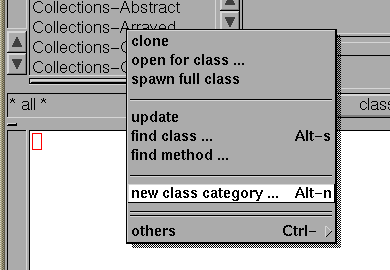
enter the name of the new category:
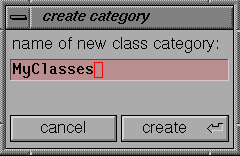
and click on the 'create' button of the entry box.
The browser will add this new category to its list and select (i.e. highlight) it:
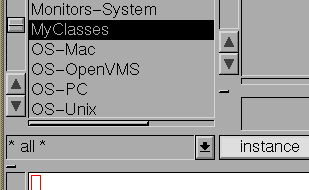
then, select the class-lists new class menu item,
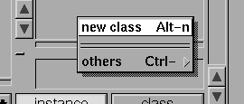
to get a definition template into the codeView:
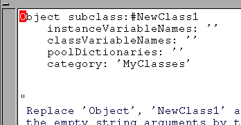
Fill out the template
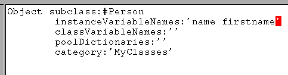
and accept it using codeViews popup menu.
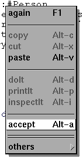
This creates your new class and the browser will update its class-list view, showing your new class:
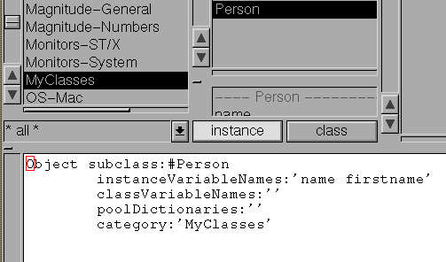
In this example, we defined a Person-class,
and defined two instance variables named name and
firstname.
I.e. instances of this class will be able to hold references
to two other objects, and those will be referred to as name and
firstname.
new message
to the class:
Person new
You don't have to compile, build or otherwise care for the compilation details. The class is ready to be used at the moment you defined and accepted its definition.
You may wonder, how our new class 'knows' how to respond to
the "new"-message - the answer is that all classes
are themself instances of a so called metaclass, which
itself inherits from the Behavior class.
Behavior defines quite a bunch of useful protocol,
one being the "new"-method.
If you are curious, have a look at the Behavior
class in your browser and see what other useful protocol is found there.
Person class do not
provide any special protocol - however,
a lot is inherited from its superclass: Object.
Therefore, we can already ask instances about their class or class-name,
we can compare instances, ask an instance for a copy of itself
and ask it for its printed string representation.
Try a few expressions (using printIt) in a workspace:
Its printed representation (called printString):
Person new printString
Transcript show:(Person new).
Transcript cr.
Person new printOn:Transcript.
|p1 p2|
p1 := Person new.
p2 := Person new.
p1 == p2
|p1 p2|
p1 := Person new.
p2 := p1 copy.
Transcript showCR:p1.
Transcript showCR:p2.
"printString"
implementation and understand that there is another (more basic) functionality
involved (to give you a hint: figure out what the role of the "printOn:"
method is ...)
In order to do someting useful with persons, we must tell them how to respond to more specific messages - i.e. we have to add some more protocol. Also, we might want to redefine some of the inherited protocol, for example, we may want to change the way instances represent themself in their printString.
The task of adding protocol (i.e. methods) is much like what we did to define the class - first we have to define a method category by selecting the new method category item from the method-category-list:
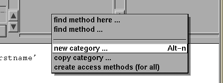
enter some descriptive name:
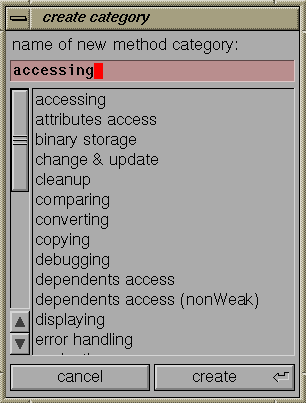
and click the 'create' button.
Then, either ask for a methods template code or simply type in the code and accept it via the codeViews popup menu.
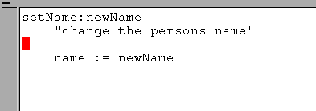
The above method defines how instances of our class will react
to the setName: keyword message - a message with one
argument.
Here, the "setName:" method simply
binds the instance variable called name to whatever was
given as the messages argument.
We can check this in a workspace, by evaluating:
Person new setName:'Miller'
... for this, Smalltalk provides a tool called
inspector,
which allows us to peek into an object.
Try the above expression again, this time using the inspectIt
menu function (instead of doIt). This evaluates the expression
and opens an inspector on the result:
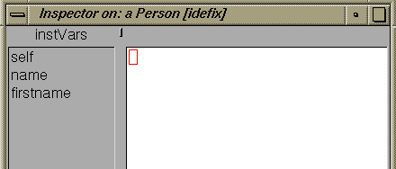
click on the name item in the list, to see its value:
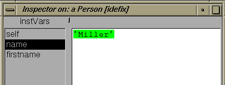
Also, open an inspector on a fresh person - and see what the instance variables are initialized with (automatically).
In addition to setting a persons name, we would also like to
ask a person for its name.
Similar to the above setter-method, we need a corresponding
getter-method, which returns some information about the person
object.
^ expression
this evaluates the expression and returns the expressions value from the method - effectively returning that value as the value of the message send (remember: all methods are invoked due to some message-expression evaluation).
Now, that we know that every message-send evaluates to something,
and all messages are actually implemented in some method, you may ask
what value is returned if no explicit return expression is evaluated
in a method (as in our first example method).
The answer is:
if no explicit return value is given in a method,
the value returned is the original receiver of the message
This makes sense, because if the returned value is the original object,
it may be the target of another message send, as in:
(Person new setName:'Miller') setFirstName:'Fred'
Person new setName:'Miller' setFirstName:'Fred'
|newPerson|
newPerson := Person new.
newPerson setName:'Miller'.
newPerson setFirstName:'Fred'.
Now, we are ready to add the getter-method for the persons
name;
add the following method to the Person class:
getName
"return the persons name"
^ name
Whenever an object is to be displayed somewhere (for example: in the Transcript),
the object in question is asked for its printString (using the printString
-message).
Therefore, it would make sense, to redefine this, to get a nicer printout
of persons.
However, if you had a look at the implementation of this message, you might have
noticed, that the printStirng implementation simply forwards the
real work to some other method, by sending the printOn: message.
This one is supposed to append a printed representation to some stream,
which gets passed as argument.
The reason for this is to avoid the construction of many temporary strings, when
objects are printed on the printer or a printed representation is stored
into a file;
in those cases, the printOn: message is sent directly, passing
the destination stream as argument.
So, we better redefine the printOn: method, and a possible implementation
could be:
printOn:aStream
"send a printed representation of myself
to aStream."
aStream nextPutAll:'Person('.
aStream nextPutAll:'name='.
name printOn:aStream.
aStream nextPutAll:' firstname='.
firstname printOn:aStream.
aStream nextPutAll:')'.
"nextPutAll:" message.
This has the advantage that anything can be used as name/firstname;
as opposed to "aStream nextPutAll:name" - which implies
that its argument is some string-like object.
With that addition, our person object prints much nicer;
try it with 'Fred Miller':
|p|
p := Person new.
p setName:'Miller'.
p setFirstName:'Fred'.
Transcript showCR:p
Lets change the printOn: method, to display persons in another format:
printOn:aStream
"send a printed representation of myself
to aStream."
aStream nextPutAll:'a person named '.
firstname printOn:aStream.
aStream space.
name printOn:aStream.
This allows you to take any other methods code as a template to start with.
I.e. you don't have to type in all of the methods text if you find some
similar method.
For the curious:
You should notice, that since you changed the definition of person,
any existing person object cannot be an instance of this 'new' class,
because they do neither know about, nor hold on any of the
additional instance variables.
Therefore, any existing instances are now made instances of a so called
obsolete person class - the old person class will stay around in
the system until no more obsolete person objects are in the system.
As an exersize, add an instance variable called telno and also
add corresponding access protocol.
By now, you may wonder if such mechanic things as defining access methods
could not be done automatically - you are right !
The browser's method category menu provides a function called
"generate access methods". This defines get- and set-methods for
either a single or all instance variables - the methods will be named
according to the instance variables name(s).
To try it, select a name from the instance variable list and invoke that menu item:
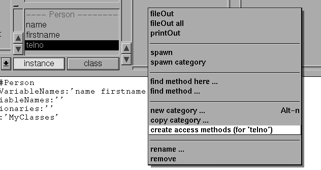
#new) are
defined in its metaclass.
As an example, let us redefine our persons #new method,
to automatically initalize the name fields of the newly created person
object:
new
|newPerson|
newPerson := super new.
newPerson setName:'*** no name yet ***'.
^ newPerson.
"super new".
This invokes the original #new method, as inherited from
some superclass (i.e. the one we have overwritten).
#new method,
a simple "self new" would lead to an endless recursion.

Copyright © Claus Gittinger Development & Consulting
Copyright © eXept Software AG
<cg@exept.de>